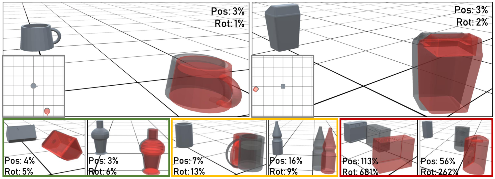
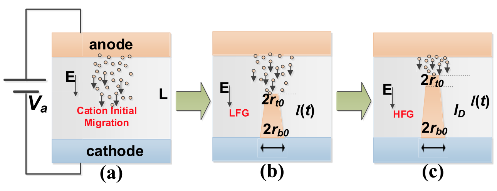
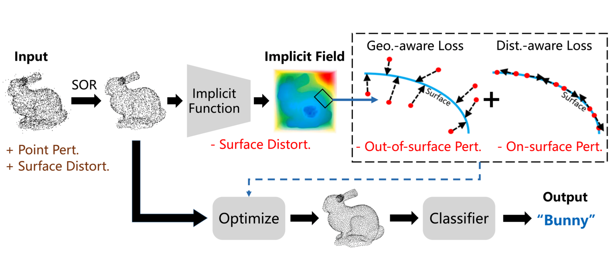

Publications
|
3DIoUMatch: Leveraging IoU Prediction for Semi-Supervised 3D Object Detection |
|
MultiBodySync: Multi-Body Segmentation and Motion Estimation via 3D Scan Synchronization |
|
Robust Neural Routing Through Space Partitions for Camera Relocalization in Dynamic Indoor Environments |
|
PT2PC: Learning to Generate 3D Point Cloud Shapes from Part Tree Conditions |
|
Curriculum DeepSDF |
|
Category-level Articulated Object Pose Estimation |
|
SAPIEN: A SimulAted Part-based Interactive ENvironment |
|
Normalized Object Coordinate Space for Category-Level 6D Object Pose and Size Estimation |
|
GSPN: Generative Shape Proposal Network for 3D Instance Segmentation in Point Cloud |
|
Learning a Generative Model for Multi-Step Human-Object Interactions from Videos |
 |
Learning Generalizable Final-State Dynamics of 3D Rigid Objects |
|
The Role of Electron Viscosity on Plasma-Wave Instability in HEMTs |
 |
An Analytical Model for the Forming Process of Conductive-Bridge Resistive-Switching Random-Access Memory |


Preprints
|
CAPTRA: CAtegory-level Pose Tracking for Rigid and Articulated Objects from Point Clouds |
 |
IF-Defense: 3D Adversarial Point Cloud Defense via Implicit Function based Restoration |
|
Rethinking Sampling in 3D Point Cloud Generative Adversarial Networks |